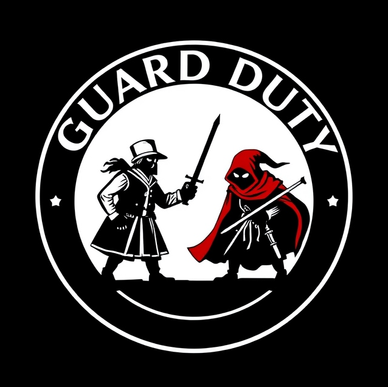
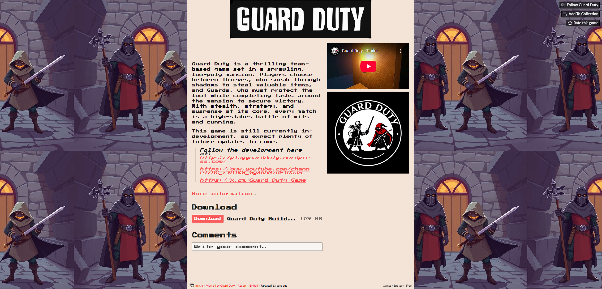
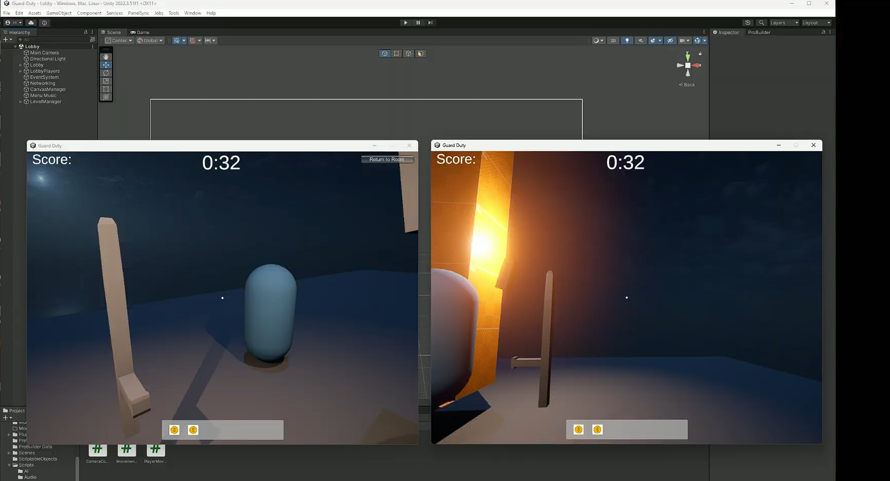

Guard Duty
Guard Duty is a 3D stealth game developed in Unity. The player takes on the role of a theif and must steal as much gold as possible without alerting the guards. Players have special gadgets to help them become the ultimate theif.
My Role
As the Project Manager for Guard Duty, I was responsible for organizing and overseeing the development process. This included:
- Planning and managing sprints to ensure timely delivery of features.
- Creating and maintaining the release schedule to keep the team on track.
- Facilitating communication between team members to resolve blockers and ensure smooth collaboration.
In addition to my managerial responsibilities, I implemented the multiplayer functionality using Mirror Networking. This involved:
- Setting up the networking architecture to support real-time multiplayer gameplay.
- Synchronizing player movements, interactions, and game states across multiple clients.
- Optimizing network performance to ensure a smooth and responsive experience for all players.
My contributions helped deliver a polished and engaging multiplayer experience, while ensuring the project stayed on schedule and met its milestones.
Technologies Used
- Unity
- C#
- Git
- Blender (for asset creation)
Screenshots

